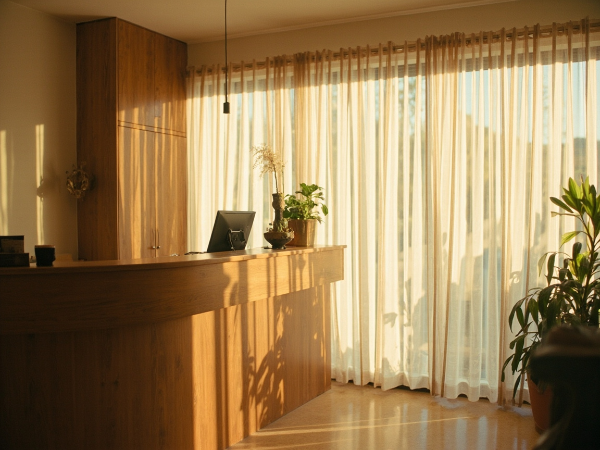
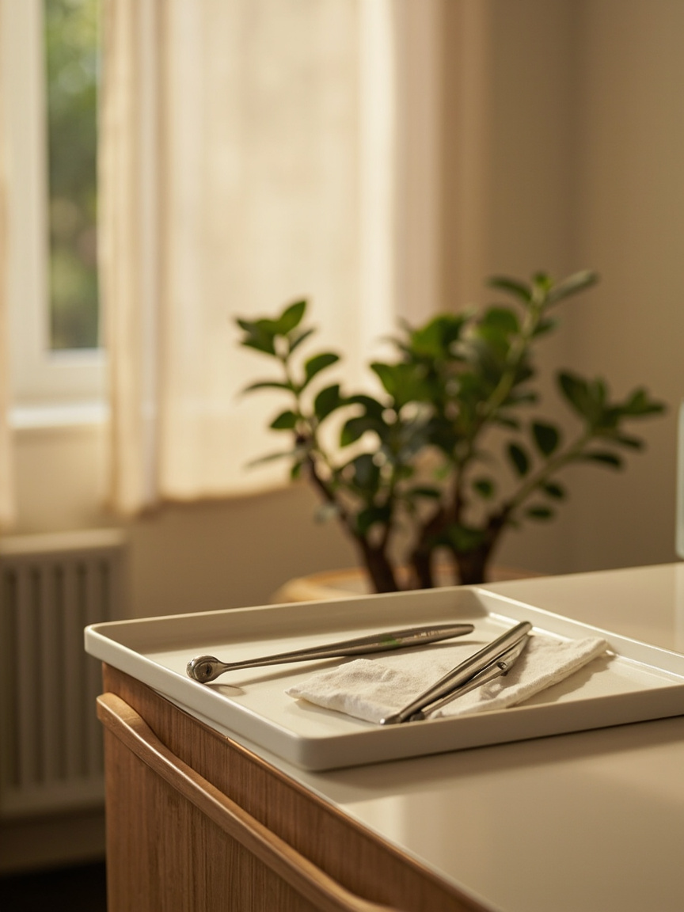
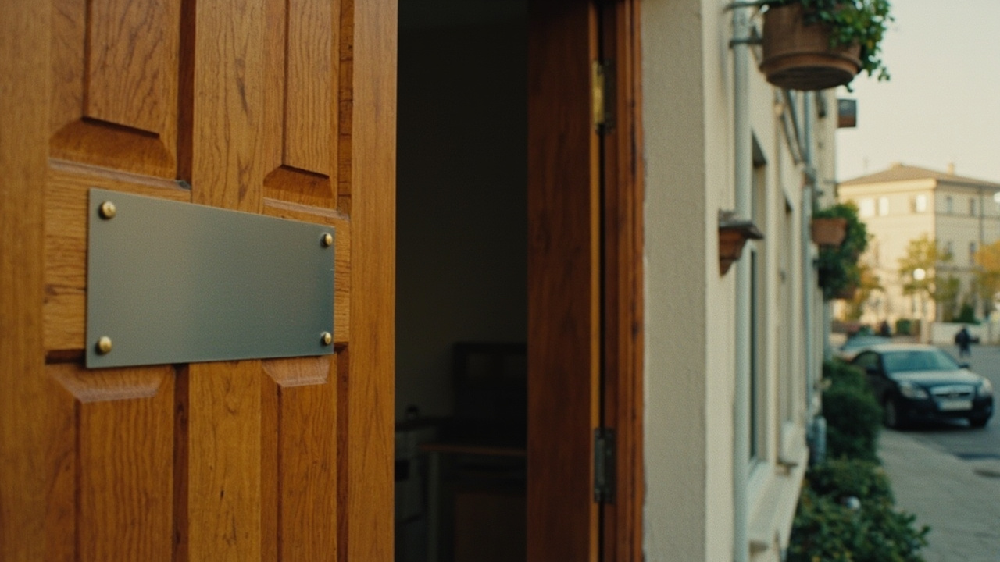

Сначала разговор
Встречаем не в кресле, а за столом в зоне ожидания. Спрашиваем, что беспокоит, что уже лечили, какие лекарства принимаете. Это нужно, чтобы подобрать анестезию.
Сначала разговор и снимок, потом план с ценой на бумаге, и только потом кресло.
Клиника не зовёт «срочно записаться» и не держит кабинет по очереди сутками. Четыре кресла и шесть врачей сделаны так, чтобы один пациент не ждал другого.
Если после осмотра захотите подумать, план с ценами останется у вас на руках, и вернуться можно когда угодно.
Как проходит первый визит
У врача на столе только снимок, план и ручка. Запись ведёт администратор, поэтому в коридоре не толпятся и никто не спрашивает, сколько ещё ждать.
Зона ожидания, первый этаж
Встречаем не в кресле, а за столом в зоне ожидания. Спрашиваем, что беспокоит, что уже лечили, какие лекарства принимаете. Это нужно, чтобы подобрать анестезию.
Врач осматривает зубы и делает снимок на своём аппарате. Изображение появляется на экране прямо в кресле: вы смотрите его вместе с врачом, а не верите на слово.
Показываем, что предлагаем, сколько это стоит и в какой последовательности. Отдельно говорим, что можно отложить, а что лучше не тянуть. Лист остаётся у вас.
Если пациент готов, начинаем сразу. Если нет, записываем на другое время и отдаём план с ценами на руки.
Про боль говорим прямо: у всех своя чувствительность. Обезболиваем всегда, перед уколом даём спокойно подышать. Если стало больно, останавливаемся.
Что взять с собой: паспорт и список лекарств. Больше ничего не нужно.
Записаться на первый визитСтоимость называем до начала лечения и записываем в план. Ниже то, что чаще всего спрашивают: восемь основных позиций с ценой от и до, что входит в цену и сколько это займёт по времени.

5 900 ₽
Осмотр, снимок и план с ценами на бумаге. Если лечитесь у нас, эта сумма идёт в зачёт стоимости лечения.
0 ₽

Один поверхностный зуб, лечение под анестезией с пломбой из композитного материала. Занимает около часа.
от 4 800 ₽

Перелечивание или лечение канала под микроскопом, восстановление коронковой части зуба входит в цену.
от 9 700 ₽

Простое удаление с анестезией и контрольным осмотром через неделю. Сложное с разделением корней считаем отдельно.
от 3 200 ₽

Имплант, установка, абатмент и коронка из диоксида циркония. Планируете больше двух зубов, считаем поштучно.
от 54 000 ₽
Сканирование, примерка каркаса и подгонка по прикусу в тот же визит. Примерка примерно десять минут.
28 500 ₽
Полный цикл выравнивания зубов, включая планирование по КТ и ретейнеры на последнем этапе. Срок 12-18 месяцев.
от 160 000 ₽
«Стоимость называем до начала лечения и записываем в план»Ольга Сергеевна Мельникова, главный врач, 14 лет практики
В цену входит работа врача, анестезия, расходники и работа лаборатории. Отдельным пункром идёт только томография, если она нужна для диагноза.
Цены действуют с 1 сентября 2025 года и не меняются в течение года при лечении по плану. Рассрочка на импланты и элайнеры оформляется в клинике, без банка.
Записаться на осмотр и узнать цену по своему случаюПрофилактикой занимаются двое, остальные лечат. На первом визите вас примет врач, который и будет вести случай дальше, передавать снимки и историю другим коллегам сам.

Объясняет каждый шаг до того, как возьмёт инструмент, и всегда показывает снимок на экране.

Ставит импланты под местной анестезией и платит за каждый шаг вибрационным наконечником, пациент не чувствует давления.

Берётся за сложные каналы и перелечивание, если зуб уже пробовали в другой клинике.

Показывает план до того, как наденет дуги, и считает срок по модели, а не на глаз.
Три записи из карточки, к нам возвращались и звали знакомых
Два года копился камень, я боялась идти. Гигиена заняла 55 минут, всё это время со мной разговаривали про щитку. Дома зубы перестали кровоточить за неделю.
Пришёл с тревогой и думал, что зуб придётся удалять. Ольга Сергеевна показала снимок на экране и объяснила, что можно вылечить. Вылечили за один визит, зуб остался свой.
Лечила канал и ставила коронку. Три визита за две недели, сумму назвали в первый день и ни разу не добавили сверх плана. Коронку подогнали на прикус за десять минут.
Отметьте, что беспокоит и когда удобно, и нажмите круглую кнопку: откроется WhatsApp с готовым текстом заявки. Администратор перезвонит в рабочее время в течение 15 минут и предложит два окна на выбор.
Что беспокоит
Когда удобно прийти
Ваша заявка —/—
Телефон и мессенджеры +7 (383) 312-58-04 WhatsApp · Telegram @kedr_stom
Открыто сейчас, до 21:00. Завтра в 08:00
От метро Гагаринская 7 минут пешком вдоль улицы. Вход с торца дома, во дворе парковка, первый этаж, кресло у окна напротив улицы. Кабинеты 1 и 2, свой КТ-аппарат и стерилизация в одном помещении.
Позвонить в клинику, +7 (383) 312-58-04